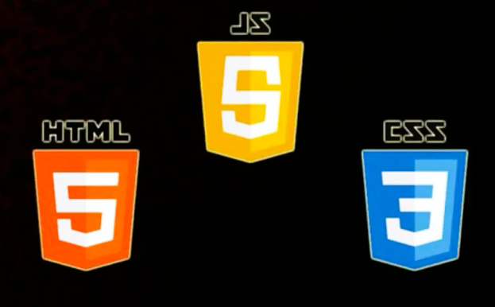
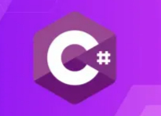
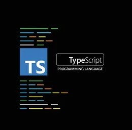
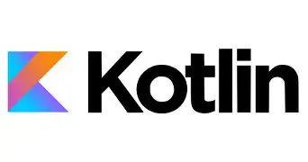
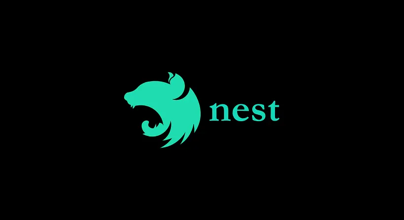

Bonjour et bienvenue sur mon Portfolio retraçant mes deux années de BTS SIO (Services Informatiques aux Organisations) en option SLAM (Solutions Logicielles et Applications Métiers).
Je suis un étudiant de 20 ans au Lycée Ella Fitzgerald à Saint‑Romain‑En‑Gal. J’ai obtenu un baccalauréat général avec les spécialités Mathématiques et Numérique et Sciences Informatiques (NSI).
J’ai effectué mes deux stages de 6 semaines dans l’entreprise SOFT&CO située à Vienne.
Depuis toujours, je suis passionné par l’informatique, la logique et le développement. Cette passion m’a naturellement conduit vers ce BTS et l’option SLAM.
Vous pourrez découvrir l’entreprise où j’ai réalisé mes deux stages ainsi que les projets menés durant ces stages et au cours de mes deux années de formation.
Après ce BTS, je souhaite poursuivre mes études pour devenir Développeur Full‑Stack.





Je m'informe souvent sur les dernières mises à jour des différents systèmes d'exploitation comme les différentes versions de Linux ou Windows.
Je m'informe également sur les dernières failles de sécurité et sur les dernières fuites de données.